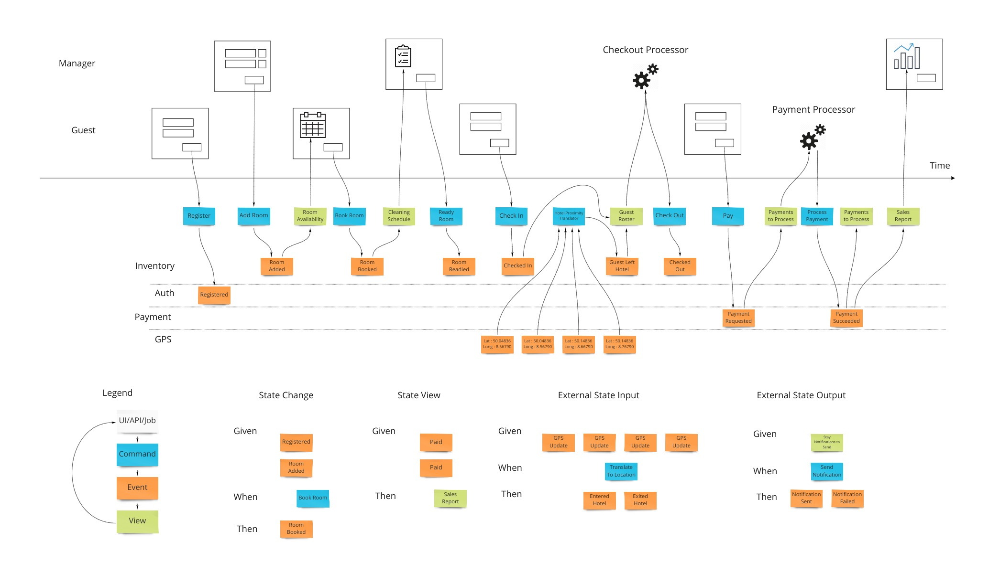
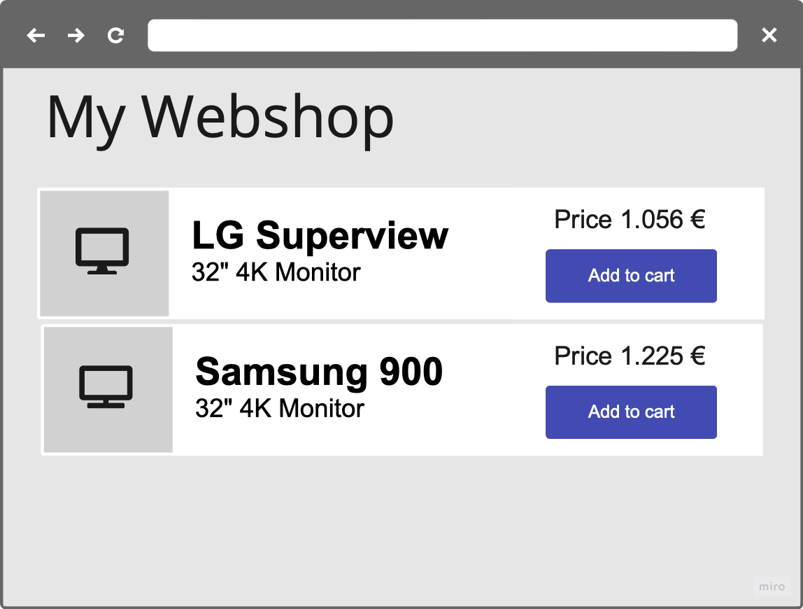
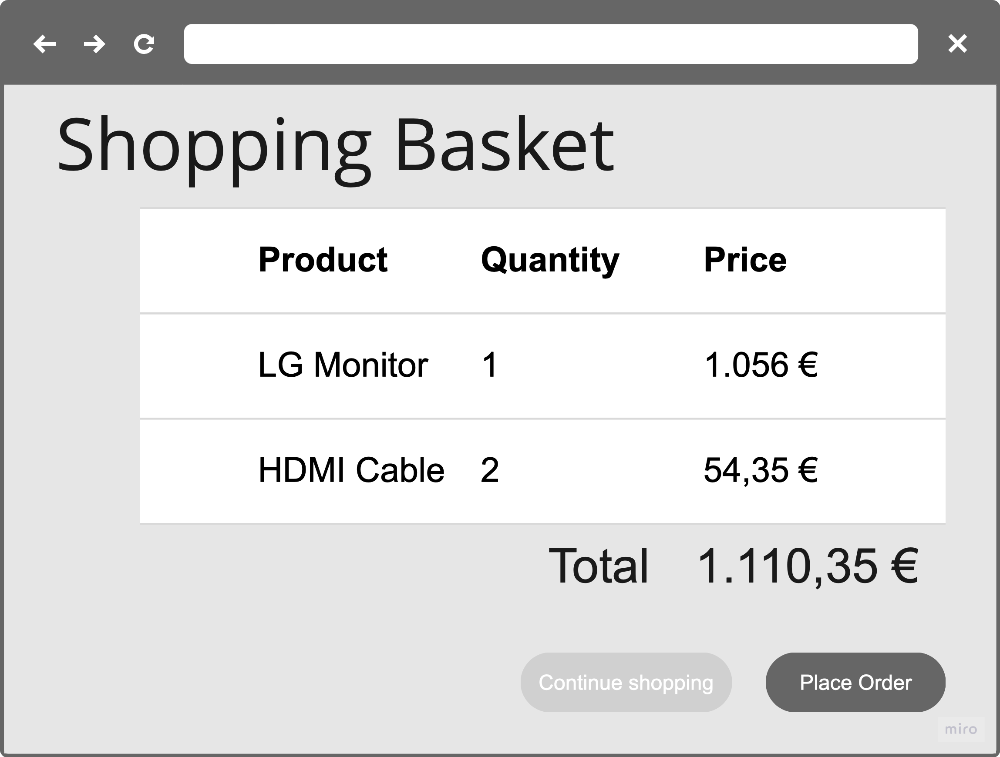
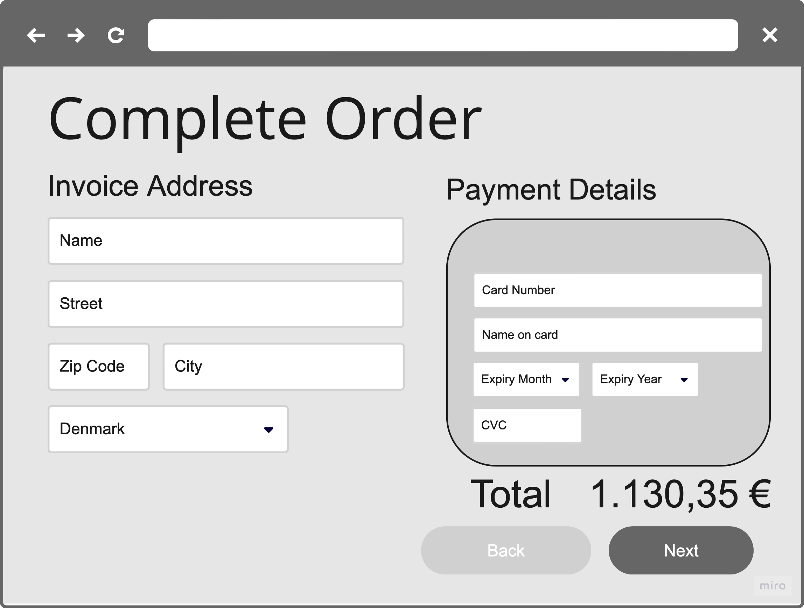
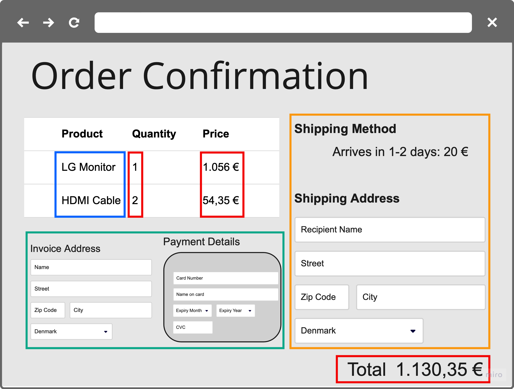

Thirteen concepts from event modeling, event sourcing and CQRS — and, next to each one, the code that implements it. One webshop, running.
Tretten begreber fra event modeling, event sourcing og CQRS — og ved siden af hvert af dem koden der implementerer det. Én webshop, der kører.
| The questionSpørgsmålet | The concepts that answer itBegreberne der besvarer det |
|---|---|
| How do we agree what the system does?Hvordan bliver vi enige om hvad systemet gør? |
|
| How does a write happen?Hvordan sker en skrivning? |
|
| How does anyone read it back?Hvordan læser nogen det tilbage? |
|
| How does it reach the rest of the world?Hvordan når det ud til resten af verden? |
|
Each concept gets a slide, and then the code that implements it. The numbers are the ones on the rail at the bottom of every slide. The code is all from one running webshop — catalogue, basket, checkout, order, shipping, payment — on PostgreSQL and Kafka.
Hvert begreb får en slide, og derefter koden der implementerer det. Tallene er dem der står på skinnen nederst på hver slide. Koden er hele vejen fra én kørende webshop — katalog, kurv, checkout, ordre, forsendelse, betaling — på PostgreSQL og Kafka.
There is no arrow back. A button sends one command and one event is appended; a projection turns streams into a table; a panel renders that table. Nothing on the write side holds a reference to a screen, which is why the right-hand column can be rebuilt, replaced or added to without touching the left.
Der er ingen pil tilbage. En knap sender én kommando og ét event tilføjes; en projektion gør streams til en tabel; et panel viser den tabel. Skrivesiden har ingen reference til en skærm, og derfor kan højre kolonne genopbygges, udskiftes eller udvides uden at røre venstre.
The orange arrows are the ones worth the two minutes: order_summary is one row folded from four streams across all three contexts, and the warehouse's work list from three. Checkout is the exception — it only writes, so no read model points at it.
De orange pile er dem der er de to minutter værd: order_summary er én række foldet af fire streams på tværs af alle tre kontekster, og lagerets arbejdsliste af tre. Checkout er undtagelsen — den skriver kun, så ingen læsemodel peger på den.
product_id name price
PRD-7f3a LG Superview 1999.50ProductAdded 1056.00 1 Mar
ProductPriceChanged 1225.00 14 Mar — spring campaign
ProductPriceChanged 1999.50 2 Apr — supplier raised itSame product. The row answers none of these; the events answer all of them. Why 1,999.50? Since when? And what did the customer who ordered on the 20th of March actually pay?
Samme produkt. Rækken besvarer ingen af dem; eventene besvarer dem alle. Hvorfor 1.999,50? Siden hvornår? Og hvad betalte kunden der bestilte den 20. marts?
interface ProductEvent {
val id: ProductId
}
data class ProductAdded(
override val id: ProductId,
val name: String,
override val price: Amount
) : ProductEvent, HasProductPrice
data class ProductPriceChanged(
override val id: ProductId,
override val price: Amount
) : ProductEvent, HasProductPriceRead-only, by construction. An event has no setters and nothing in the application can amend one after it is recorded — which is the property the concept asks for, rather than a rule people have to remember.
Skrivebeskyttet fra fødslen. Et event har ingen settere, og intet i applikationen kan rette et efter det er registreret — netop den egenskab begrebet beder om, frem for en regel folk skal huske.
events/ and types/ are the only two packages another bounded context may import. shipping and payment read these events; neither can reach anything else in sales.
events/ og types/ er de eneste to pakker en anden bounded context må importere. shipping og payment læser disse events; ingen af dem kan nå andet i sales.
ProductPriceChanged makes a decade of stored events unreadable — it is a data migration, not a refactor. Name events with the business, once.
Event store'en gemmer den konkrete event-type med hver optegnelse, og Essentials laver ingen upcasting. At omdøbe ProductPriceChanged gør et årtis gemte events ulæselige — det er en datamigrering, ikke en refaktorering. Navngiv events sammen med forretningen, én gang.

Invite people with questions and people with answers, give them unlimited wall space, and write only what has happened. The disagreements that surface are context boundaries, found on day one instead of in month six.
Inviter folk med spørgsmål og folk med svar, giv dem uendelig vægplads, og skriv kun hvad der er sket. De uenigheder der dukker op er kontekstgrænser, fundet på dag ét frem for i måned seks.
ChangeProductPrice.kt ← the command (blue), and the request body
ChangeProductPriceDecider.kt ← the decision
ChangeProductPriceAPI.kt ← the trigger (UI / API / job)
ProductHasNotBeenAddedException.kt ← the refusal
sales/events/ProductEvent.kt ← the event (orange)
sales/views/products_for_sale/ ← the view (green), its own sliceOne slice is one unit of business value, end to end and independently implementable — that is the definition, on disk.
Én slice er én enhed af forretningsværdi, ende til ende og uafhængigt implementerbar — det er definitionen, på disken.
Twenty-four of them in the demo. There is no services/, no repositories/, no controllers/: a new use case adds a directory instead of growing an existing class.
Fireogtyve af dem i demoen. Der er ingen services/, ingen repositories/, ingen controllers/: en ny use case tilføjer en mappe frem for at udvide en eksisterende klasse.
The command record is the HTTP request body, so there is no DTO and no mapper to keep in step with it.
Command-recorden er HTTP request body, så der er ingen DTO og ingen mapper at holde i trit.
How a user action changes state. Click “Place Order” → PlaceOrder → OrderPlaced.
Hvordan en brugerhandling ændrer tilstand. Klik “Afgiv ordre” → PlaceOrder → OrderPlaced.
How events become useful information. OrderPlaced → customer's order history.
Hvordan events bliver brugbar information. OrderPlaced → kundens ordrehistorik.
How the system responds on its own. The trigger in the middle can equally be a person working a list.
Hvordan systemet reagerer af sig selv. Triggeren i midten kan lige så godt være et menneske der arbejder en liste.
| PatternMønster | Lives inBor i | You extendDu extender | In the demoI demoen |
|---|---|---|---|
| CommandCommand | <bc>/use_cases/<slice>/ |
Decider<CMD, EVENT> |
14 |
| ViewView | <bc>/views/<slice>/ |
ViewEventProcessor |
5 |
| AutomationAutomation | <bc>/automations/<slice>/ |
EventProcessor |
3 |
| Anti-corruption boundaryAnti-corruption-grænse | <bc>/external_systems/<sys>/ |
EventProcessor, or a plain port, eller en simpel port |
2 |
Decider is a pure function — no subscription, no transaction of its own. A ViewEventProcessor brings an ordered, replayable subscription with a stored resume point. An EventProcessor adds an Inbox in front of the handler, because an automation may call the outside world and must survive a failure doing so.
Hver bringer det maskineri mønstret har brug for, og intet andet. En Decider er en ren funktion — intet subscription, ingen egen transaktion. En ViewEventProcessor bringer et ordnet, replaybart subscription med gemt resume-punkt. En EventProcessor tilføjer en Inbox foran handleren, fordi en automatisering kan kalde omverdenen og skal overleve en fejl undervejs.
The fourth row is not one of the three — it is the same automation machinery pointed outward, at Kafka and at a payment gateway.
Den fjerde række er ikke ét af de tre — det er samme automation-maskineri vendt udad, mod Kafka og en betalingsgateway.



Two packages cross a boundary: events/ and types/. Everything in the dashed block is private to its lane, and the compiler is what says so — not a review comment and not a diagram on a wiki.
To pakker krydser en grænse: events/ og types/. Alt i den stiplede blok er privat for sin bane, og compileren er den der siger det — ikke en review-kommentar og ikke et diagram på en wiki.
Two different crossings, and the slide draws both: shipping imports sales' event classes at compile time, and receives the events themselves at runtime from the store. What it never does is call sales — so it would keep working if sales were down for an hour.
To forskellige krydsninger, og sliden tegner begge: shipping importerer sales' event-klasser på compile-tidspunktet, og modtager selve eventene på kørselstidspunktet fra store'en. Det den aldrig gør, er at kalde sales — så den ville køre videre hvis sales var nede i en time.
@Test
fun `Changing the price`() {
scenario
.given(ProductAdded(productId, "Test product", Amount.of("125.95")))
.when_(ChangeProductPrice(productId, Amount.of("100.00")))
.then_(ProductPriceChanged(productId, Amount.of("100.00")))
}
@Test
fun `Changing the price to the existing price results in no change`() {
scenario
.given(ProductAdded(productId, "Test product", price))
.when_(ChangeProductPrice(productId, price))
.thenExpectNoEvent()
}
@Test
fun `Changing the price on an empty event stream fails`() {
scenario
.given()
.when_(ChangeProductPrice(productId, price))
.thenFailsWithException(ProductHasNotBeenAddedException(productId))
}GivenWhenThenScenario takes a decider and nothing else. 30 tests, 0.3 seconds, no Docker — so they run on every save, not on every push.
GivenWhenThenScenario tager en decider og intet andet. 30 tests, 0,3 sekunder, ingen Docker — så de kører ved hver gemning, ikke ved hvert push.
Three assertions cover the three things a decision can do: then_ an event, thenExpectNoEvent, thenFailsWithException.
Tre assertions dækker de tre ting en beslutning kan gøre: then_ et event, thenExpectNoEvent, thenFailsWithException.
100.0 instead of 100.00 must also be no change. Amount wraps BigDecimal, whose equals is scale-sensitive — so an idempotency check written with == records a price change that changes nothing.
Der er en fjerde test: samme pris skrevet 100.0 i stedet for 100.00 skal også være ingen ændring. Amount pakker BigDecimal, hvis equals er skala-sensitiv — så et idempotens-check med == registrerer en prisændring der ikke ændrer noget.
@Service
class ChangeProductPriceDecider : Decider<ChangeProductPrice, ProductEvent> {
override fun handle(cmd: ChangeProductPrice,
events: List<ProductEvent>): ProductPriceChanged? {
if (events.isEmpty()) {
throw ProductHasNotBeenAddedException(cmd.id)
}
val currentPrice = events.last { it is HasProductPrice } as HasProductPrice
// compareTo, not ==: BigDecimal.equals is scale-sensitive,
// so 100.00 != 100.0 and the same price would look like a change
val isPriceTheSame = currentPrice.price.compareTo(cmd.price) == 0
return if (isPriceTheSame) null
else ProductPriceChanged(cmd.id, cmd.price)
}
override fun canHandle(cmd: Any): Boolean = cmd is ChangeProductPrice
}No aggregate class, no repository, no database. Current state is read straight off the stream the framework handed in.
Ingen aggregate-klasse, ingen repository, ingen database. Nuværende tilstand læses direkte af den stream frameworket gav med.
“Already done” returning no event rather than an error is what makes every command in the system safe to retry.
At “allerede gjort” giver intet event frem for en fejl, er hvad der gør hver kommando sikker at gentage.
Definition. The decider is responsible for making decisions based on received commands and past events.
Definition. Decideren er ansvarlig for at træffe beslutninger ud fra modtagne kommandoer og tidligere events.
Role. It determines how events apply to state, and when to emit new events in response to a command.
Rolle. Den afgør hvordan events anvendes på tilstand, og hvornår nye events skal udsendes som svar på en kommando.
Example. In a banking system, a TransactionDecider approves or declines a transfer based on the account balance.
Eksempel. I et banksystem godkender eller afviser en TransactionDecider en overførsel ud fra kontoens saldo.
Nothing else goes in. No repository, no clock, no service. That is what makes the decision reproducible — and testable without infrastructure.
Intet andet går ind. Ingen repository, intet ur, ingen service. Det er hvad der gør beslutningen reproducerbar — og testbar uden infrastruktur.
@Bean
fun productsAggregateTypeConfiguration() = AggregateTypeConfiguration(
aggregateType = PRODUCTS,
aggregateIdType = ProductId::class.java,
aggregateIdSerializer = AggregateIdSerializer.serializerFor(ProductId::class.java),
// any Decider whose command implements ProductCommand handles this type
deciderSupportsAggregateTypeChecker =
HandlesCommandsThatInheritsFromCommandType(ProductCommand::class),
commandAggregateIdResolver = { cmd -> (cmd as ProductCommand).id },
eventAggregateIdResolver = { e -> (e as ProductEvent).id }
)commandBus.send(cmd)decider.handle(cmd, events)One more bean for the whole application collects every configuration and every decider. After that, a new use case is a directory with @Service on the decider — no registration to forget, and no @Transactional, because the command bus owns the UnitOfWork.
Én bean mere for hele applikationen samler hver konfiguration og hver decider. Derefter er en ny use case en mappe med @Service på decideren — ingen registrering at glemme, og ingen @Transactional, fordi command bus'en ejer UnitOfWork.
Honestly: kotlin-eventsourcing is marked experimental, and one decision yields at most one event. That pushes you towards CheckOutRequested instead of three technical events — but a decision that genuinely needs two must use the Java EventStreamDecider.
Ærligt: kotlin-eventsourcing er markeret eksperimentel, og én beslutning giver højst ét event. Det skubber mod CheckOutRequested frem for tre tekniske events — men en beslutning der reelt kræver to skal bruge Java'ens EventStreamDecider.
aggregate_id global_order event_order timestamp event_type event_payload
------------ ------------ ----------- ---------------- ------------------- -------------
14300 99 10 2024-01-06 07:39 CheckOutRequested <serialized>
14237 100 0 2024-01-06 07:39 ItemAdded <serialized> → basket: A
14237 101 1 2024-01-06 07:40 ItemAdded <serialized> → basket: A B
14237 102 2 2024-01-06 07:41 ItemAdded <serialized> → basket: A B C
14237 103 3 2024-01-06 07:45 ItemRemoved <serialized> → basket: A B
14237 104 4 2024-01-06 07:46 ItemAdded <serialized> → basket: A B D
14237 105 5 2024-01-06 07:50 CheckOutRequested <serialized> → closedeventStore.fetchStream(AggregateType("ShoppingBasket"), ShoppingBasketId("14237")) returns rows 100–105. Nothing else in the table is involved.
eventStore.fetchStream(AggregateType("ShoppingBasket"), ShoppingBasketId("14237")) returnerer række 100–105. Intet andet i tabellen er involveret.
No UPDATE. No DELETE. The removal of an item is itself an event, which is why “what was in the basket at 07:41?” is answerable at all.
Intet UPDATE. Intet DELETE. Fjernelsen af en vare er selv et event, og derfor kan “hvad var i kurven 07:41?” besvares.
// inside the UnitOfWork the command bus opened
val events = eventStore.fetchStream(SHOPPING_BASKETS, basketId)
val event = decider.handle(cmd, events)
eventStore.appendToStream(SHOPPING_BASKETS, basketId, event)| OrderingOrdning | ScopeOmfang | Used forBruges til |
|---|---|---|
EventOrder | one streamén stream | a projection's idempotency checken projektions idempotens-check |
GlobalEventOrder | every streamalle streams | a subscription's resume pointet subscriptions resume-punkt |
timestamp | — | documentation onlykun dokumentation |
class RemoveItemFromShoppingBasketDecider :
Decider<RemoveItemFromShoppingBasket, ShoppingBasketEvent> {
override fun handle(cmd, events): ItemRemovedFromShoppingBasket? {
var productQuantities: MutableMap<ProductId, Int> =
Evolver.applyEvents(ProductQuantityEvolver(), mutableMapOf(), events)
var productQuantity = productQuantities[cmd.product] ?: 0
return if (productQuantity > 0)
ItemRemovedFromShoppingBasket(cmd.id, cmd.product)
else null
}
}The Evolver plays a crucial role in projecting past events into a view projection or into aggregate state — the same fold serves both.
Evolveren spiller en central rolle i at projicere tidligere events ind i en view-projektion eller i aggregate-tilstand — samme foldning tjener begge.
A decision that needs to know “how many of this product are in the basket?” folds the stream, right there, and answers it.
En beslutning der skal vide “hvor mange af dette produkt er i kurven?” folder streamen, på stedet, og svarer.
fun basketLinesEvolver() =
Evolver<ShoppingBasketEvent, Map<ProductId, List<Amount>>> { event, state ->
val current = state ?: emptyMap()
when (event) {
is ItemAddedToShoppingBasket ->
current + (event.product to
((current[event.product] ?: emptyList()) + event.price))
is ItemRemovedFromShoppingBasket -> {
val remaining = (current[event.product] ?: emptyList()).dropLast(1)
if (remaining.isEmpty()) current - event.product
else current + (event.product to remaining)
}
is CheckOutRequested -> current
}
}val lines = Evolver.applyEvents(basketLinesEvolver(), emptyMap(), events)
return (lines[cmd.product] ?: emptyList()).lastOrNull()
?.let { ItemRemovedFromShoppingBasket(cmd.id, cmd.product, it) }Two folds over the same stream, neither knowing about the other. This slice needs units and their prices; request_checkout folds the same events into a running total. Neither grows a field for the other's sake.
To foldninger over samme stream, ingen af dem kender den anden. Denne slice har brug for enheder og deres priser; request_checkout folder de samme events til en løbende total.
The fold tracks prices, not just quantities, because the removal event carries the price of the unit that left. Without that, the basket view and the checkout total each had to guess which unit it was — and disagreed when two units went in at different prices.
Foldningen følger priser, ikke kun antal, fordi remove-eventet bærer prisen på den enhed der forsvandt. Uden det måtte kurv-viewet og checkout-totalen hver gætte — og de var uenige når to enheder gik ind til forskellige priser.
“A single model isn't appropriate for transactional, query, and reporting concerns.”
“En enkelt model passer ikke til transaktionelle, forespørgsels- og rapporteringsbehov.”
INNER JOIN, OUTER JOIN, UNION for any non-trivial question.INNER JOIN, OUTER JOIN, UNION for hvert ikke-trivielt spørgsmål.select * from read_model where …select * from read_model where …@Service
class ProductsForSaleViewProjection(
dependencies: ViewEventProcessorDependencies,
private val repository: ProductsForSaleViewRepository
) : ViewEventProcessor(dependencies) {
override fun getProcessorName() = "ProductsForSaleViewProjection"
override fun reactsToEventsRelatedToAggregateTypes() =
listOf(SalesAggregateTypes.PRODUCTS)
@MessageHandler
fun on(e: ProductAdded, message: OrderedMessage) {
if (repository.existsById(e.id.toString())) return // replay, or redelivery
repository.save(ProductForSaleView(e.id.toString(), e.name, e.price,
message.order, OffsetDateTime.now()))
}
@MessageHandler
fun on(e: ProductPriceChanged, message: OrderedMessage) {
val existing = repository.findById(e.id.toString()).orElse(null) ?: return
if (existing.version >= message.order) return // already applied
existing.price = e.price
existing.version = message.order
repository.save(existing)
}
}@Entity
@Table(name = "products_for_sale_view")
data class ProductForSaleView(
@Id val id: String,
var name: String,
@Convert(converter = MoneyAttributeConverter::class)
@Column(precision = 19, scale = 2)
var price: Amount,
var version: Long,
var lastUpdated: OffsetDateTime
)
interface ProductsForSaleViewRepository :
JpaRepository<ProductForSaleView, String>ViewEventProcessor brings the subscription: in order per stream, a stored resume point, and a fenced lock so one instance projects at a time.
ViewEventProcessor bringer subscriptionet: i rækkefølge pr. stream, et gemt resume-punkt, og en fenced lock så én instans projicerer ad gangen.
Wipe the table and it comes back by replay. That is what makes a view safe to add, and safe to get wrong once.
Slet tabellen og den kommer tilbage ved replay. Det er hvad der gør et view sikkert at tilføje, og sikkert at tage fejl af én gang.
@MessageHandler
fun handle(e: ProductPriceChanged, orderedMessage: OrderedMessage) {
var productForSale = repository.findById(e.id.value).orElseThrow()
if (productForSale.version == orderedMessage.order) {
return // idempotent handling
}
if (productForSale.version + 1 == orderedMessage.order) {
productForSale.price = e.price
productForSale.version = orderedMessage.order
repository.save(productForSale)
} else {
throw EventOutOfOrderException(…) // a gap: refuse to guess
}
}| RequirementKrav | WhoHvem | HowHvordan |
|---|---|---|
| In orderI rækkefølge | frameworkframework | By EventOrder per stream — but not across two aggregate typesEfter EventOrder pr. stream — men ikke på tværs af to aggregate-typer |
| Never missedAldrig mistet | frameworkframework | A stored resume point per subscriber, and a fenced lock so one instance projectsEt gemt resume-punkt pr. subscriber, og en fenced lock så én instans projicerer |
| Duplicates harmlessDubletter harmløse | your codedin kode | Compare the row's version against message.order — the demo's projections all doSammenlign rækkens version med message.order — demoens projektioner gør det alle |
The demo does not use EventOutOfOrderException: two of its projections read two contexts' streams, where no order exists between them. They tolerate either arriving first and re-check completeness instead.
Demoen bruger ikke EventOutOfOrderException: to af dens projektioner læser to kontekster' streams, hvor der ikke findes nogen rækkefølge mellem dem. De tolererer at begge kan komme først.
CQS, at property level: a setter changes data and returns nothing, a getter reads data and has no side effects. CQRS is the same split one level up — Greg Young's words above.
CQS, på property-niveau: en setter ændrer data og returnerer intet, en getter læser data og har ingen sideeffekter. CQRS er samme opdeling et niveau op.
And the arithmetic: 20 ms out, 1 ms to the database, 100 ms to render, 100 ms to paint, 20 ms back — the data was already 120 ms old, plus 1–1.5 seconds of thinking time.
Og regnestykket: 20 ms ud, 1 ms til databasen, 100 ms at rendere, 100 ms at tegne, 20 ms tilbage — dataene var allerede 120 ms gamle, plus 1–1,5 sekunds betænkningstid.
@RestController
class ProductsForSaleAPI(private val repository: ProductsForSaleViewRepository) {
@GetMapping("/api/products-for-sale")
fun productsForSale(): List<ProductForSaleResponse> =
repository.findAll()
.sortedBy { it.name }
.map { ProductForSaleResponse(it.id, it.name, it.price) }
}No aggregate is loaded, no eager-versus-lazy decision exists, and reads stop competing with writes.
Intet aggregate loades, ingen eager-kontra-lazy-beslutning findes, og læsninger konkurrerer ikke med skrivninger.
A new question is a new view, built by replay — no migration, no change to the write side.
Et nyt spørgsmål er et nyt view, bygget ved replay — ingen migrering, ingen ændring af skrivesiden.
The row can be a few hundred milliseconds behind the fact, and that lands in the UI rather than in the infrastructure.
Rækken kan være et par hundrede millisekunder bagud, og det lander i UI'et frem for i infrastrukturen.
The demo's shop page polls after placing an order. It does not pretend the hold and the packaging list are already there.
Demoens shop-side poller efter en ordre er afgivet. Den lader ikke som om reservationen og pakkelisten allerede er der.

Nobody instructed payment — it watched for a fact and decided what that fact meant for it. That is the automation pattern, drawn.
Ingen instruerede payment — den holdt øje med et faktum og besluttede hvad det betød for den. Det er automation-mønstret, tegnet.
override fun reactsToEventsRelatedToAggregateTypes() = listOf(
SalesAggregateTypes.SHOPPING_BASKETS, // total, from CheckOutRequested
SalesAggregateTypes.ORDERS, // address, method, placed
ShippingAggregateTypes.SHIPPING_ORDERS, // packaging, shipped
PaymentAggregateTypes.CREDIT_CARD_HOLDS) // held, or rejected
@MessageHandler
fun on(e: OrderShipped, message: OrderedMessage) =
update(e.id.toString()) { it.shippingStatus = "SHIPPED: ${e.trackingNumber}" }@MessageHandler
fun on(e: CheckOutRequested, m: OrderedMessage) = updateThenAct(e.orderId) { it.total = e.total }
@MessageHandler
fun on(e: PaymentDetailsAdded, m: OrderedMessage) = updateThenAct(e.id) { it.paymentMethod = … }
@MessageHandler
fun on(e: OrderPlaced, m: OrderedMessage) = updateThenAct(e.id) { it.placed = true }
private fun updateThenAct(orderId: OrderId, change: (OrderAwaitingHold) -> Unit) {
val row = awaitingHold.findById(orderId.toString())
.orElseGet { OrderAwaitingHold(id = orderId.toString()) }
change(row); awaitingHold.save(row)
if (!row.needsHold(CARD)) return
placeHold(orderId, row) // the gateway, then a command
}Save the order and send the invoice: two transaction boundaries, no shared transaction. Crash in between and one of the two never happened.
Gem ordren og send fakturaen: to transaktionsgrænser, ingen fælles transaktion. Gå ned imellem, og én af de to skete aldrig.
@Service
class OrderShippedKafkaPublisher(…) : EventProcessor(dependencies) {
override fun reactsToEventsRelatedToAggregateTypes() = listOf(SHIPPING_ORDERS)
override fun getInboxRedeliveryPolicy(): RedeliveryPolicy =
RedeliveryPolicy.exponentialBackoff()
.setInitialRedeliveryDelay(Duration.ofMillis(200))
.setMaximumNumberOfRedeliveries(20)
.setDeliveryErrorHandler(
MessageDeliveryErrorHandler.stopRedeliveryOn(IllegalArgumentException::class.java))
.build()
@MessageHandler
fun handle(e: OrderShipped, eventMessage: OrderedMessage) {
val externalEvent = ExternalOrderShipped(
orderId = e.id.toString(), // typed inside,
trackingNumber = e.trackingNumber.toString(), // plain outside
eventOrder = eventMessage.order) // so consumers can dedupe
kafkaTemplate.send(ProducerRecord(topic, externalEvent.orderId, externalEvent))
}
}ShipOrder writes only the event store, in one local transaction. This processor then reads the committed stream and publishes — at least once, with a resume point, so a broker outage delays the message rather than losing it.
ShipOrder skriver kun event store'en, i én lokal transaktion. Denne processor læser derefter den committede stream og publicerer — mindst én gang, med et resume-punkt, så et broker-nedbrud udskyder beskeden frem for at miste den.
Verified in the demo: stop the Kafka container, ship an order, and it still ships. Start the broker again and the external event goes out.
Verificeret i demoen: stop Kafka-containeren, send en ordre, og den sendes stadig. Start brokeren igen, og det eksterne event går ud.
And the commitment that “at least once” implies: somebody has to watch the dead letter queue. A dead letter is one log line, and the business outcome simply never happens.
Og den forpligtelse “mindst én gang” medfører: nogen skal holde øje med dead letter-køen. En dead letter er én log-linje, og forretningsresultatet udebliver bare.
examples/essentials-webshop-demo this app, Kotlin, 24 slices
examples/essentials-trading-demo snapshots, closing books, CDC
LLM/LLM-kotlin-eventsourcing.md Decider, Evolver, testsNot the biggest aggregate, and not the whole system. The one where somebody keeps asking “why does it say that?” — a price, a status, a balance, an entitlement. That is where the history pays for itself.
Ikke det største aggregate, og ikke hele systemet. Det ene hvor nogen hele tiden spørger “hvorfor står der det?” — en pris, en status, en saldo, en rettighed. Dér betaler historien sig selv.
Draw it on a wall with the person who asks. Four boxes, left to right, past tense. Then one slice: command, decider, event, view, test.
Tegn det på en væg med den der spørger. Fire kasser, fra venstre mod højre, i datid. Derefter én slice: command, decider, event, view, test.
/essentials:init a new project, wired
/essentials:add-slice one more slice, any kindRun the demo yourself: mvn spring-boot:run -pl :essentials-webshop-demo -Dspring-boot.run.profiles=compose, then /shop/index.html.
Kør demoen selv: mvn spring-boot:run -pl :essentials-webshop-demo -Dspring-boot.run.profiles=compose, derefter /shop/index.html.
Questions.
Spørgsmål.